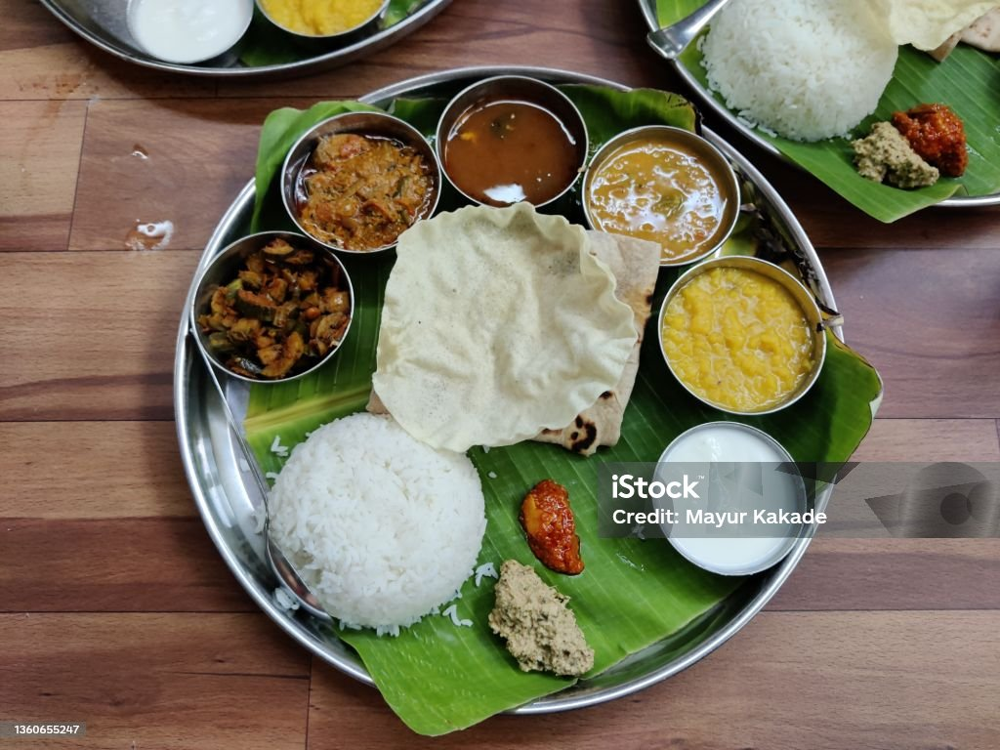

Boiled eggs are typically from a chicken, and are cooked with their shells unbroken, usually by immersion in boiling water.

The reason why chicken biryani is so famous is due to the different flavours and the ingredients it carries as well.

Dosa is famous for its simple ingredients and savory, slightly bitter flavor. It can be eaten as a snack, breakfast, or anytime

A meal is a specific time when people eat prepared food, or the food itself that is eaten during that time.